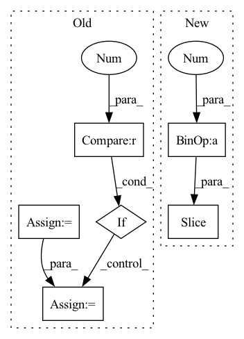

Pattern ID :1966
Before Change
first_h_a = self.initHidden_alpha(x.shape[1])
first_h_b = self.initHidden_beta(x.shape[1])
self.emb = self.embedding(x)
if self.drop < 1 :
self.emb = self.dropout(self.emb)
count = np.arange(x.shape[0]) + 1
self.c_t = torch.zeros_like(self.emb) // shape=(seq_len, batch_size, day_dim)After Change
out = torch.zeros((batch_size, time_steps, self.hidden_dim))
for cur_time in range(time_steps):
cur_x = x[:, : cur_time + 1 , :]
out[:, cur_time, :] = self.retain_encoder(cur_x)
return out
In pattern: SUPERPATTERN
Frequency: 3
Non-data size: 6
Instances Fragment ID: 7328124
Project Name: yhzhu99/covid-ehr-benchmarks
Commit Name: b3d4ba85ad8e8cfeb3e45e07e5fadfa3fd4a25fa
Time: 2022-06-25
Author: yhzhu99@gmail.com
File Name: app/models/backbones/retain.py
M Class Name: RETAIN
N Class Name: RETAIN
M Method Name: forward(2)
N Method Name: forward(2)
M Parent Class: nn.Module
N Parent Class: nn.Module
M File Name: app/models/backbones/retain.py
N File Name: app/models/backbones/retain.py
M Start Line: 64
M End Line: 83
N Start Line: 44
N End Line: 53
Before Change
or (batch_size, num_blocks*growth_rate, n_bins, n_frames)
x = input
stacked = []
stacked.append(input)
for idx in range(self.num_blocks):
if idx != 0 :
x = torch.cat(stacked, dim=1)
x = self.net[idx](x)
stacked.append(x)
After Change
x_residual = x_residual + x
in_channels = growth_rate[idx]
stacked_channels = sum(growth_rate[idx+1: ])
sections = [in_channels, stacked_channels]
if idx != num_blocks - 1: Fragment ID: 7328129
Project Name: tky823/dnn-based_source_separation
Commit Name: 8fb5cd5f4f8b4a435d058aef6204904f657abea0
Time: 2021-06-06
Author: 40362510+tky823@users.noreply.github.com
File Name: src/models/d3net.py
M Class Name: D3Block
N Class Name: D3Block
M Method Name: forward(2)
N Method Name: forward(2)
M Parent Class: nn.Module
N Parent Class: nn.Module
M File Name: src/models/d3net.py
N File Name: src/models/d3net.py
M Start Line: 357
M End Line: 367
N Start Line: 414
N End Line: 430
Before Change
or (batch_size, depth * growth_rate, n_bins, n_frames) if type(growth_rate) is int
x = input
stacked = []
output = []
stacked.append(input)
for idx in range(self.depth):
if idx != 0 :
x = torch.cat(stacked, dim=1)
x = self.net[idx](x)
stacked.append(x)
After Change
x_residual = x_residual + x
in_channels = growth_rate[idx]
stacked_channels = sum(growth_rate[idx+1: ])
sections = [in_channels, stacked_channels]
if idx != depth - 1: Fragment ID: 7328128
Project Name: tky823/dnn-based_source_separation
Commit Name: 8fb5cd5f4f8b4a435d058aef6204904f657abea0
Time: 2021-06-06
Author: 40362510+tky823@users.noreply.github.com
File Name: src/models/d2net.py
M Class Name: D2Block
N Class Name: D2Block
M Method Name: forward(2)
N Method Name: forward(2)
M Parent Class: nn.Module
N Parent Class: nn.Module
M File Name: src/models/d2net.py
N File Name: src/models/d2net.py
M Start Line: 51
M End Line: 62
N Start Line: 51
N End Line: 67